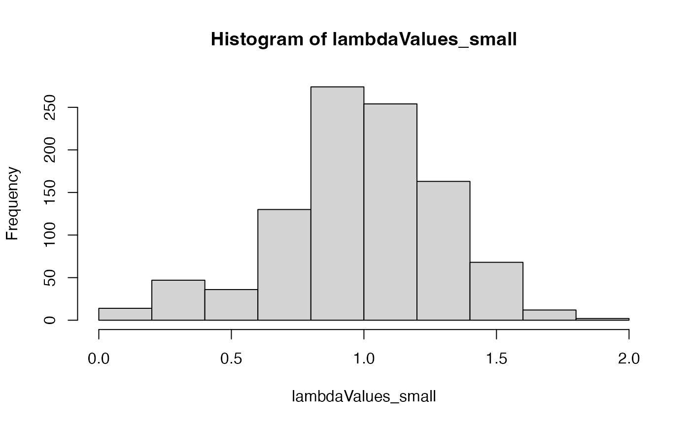
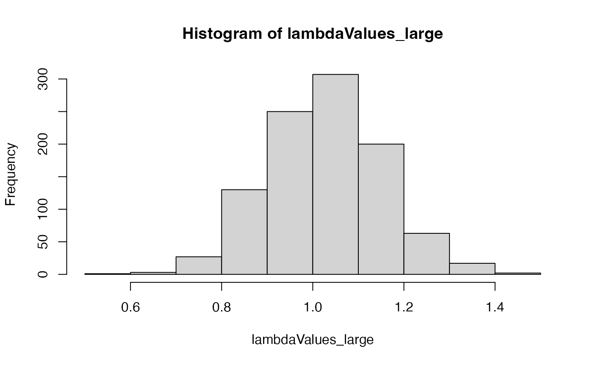

Exploring sampling error
Owen Jones
2023-03-19
Source:vignettes/sampling_error.Rmd
sampling_error.RmdIn this vignette we will explore sampling error which is associated with small sample sizes.
Let’s say we have estimated a Matrix model that looks like this.
matU <- matrix(c(0.1, 0.0,
0.2, 0.4), byrow = TRUE, nrow = 2)
matF <- matrix(c(0.0, 3.0,
0.0, 0.0), byrow = TRUE, nrow = 2)
matA <- matU + matFThe estimated population growth rate is this:
popdemo::eigs(matA,"lambda")
#> [1] 1.038987But this data come from a sample collected in the real world. It is therefore likely that there is some errors introduced by sampling error. Let’s simulate the matrix values estimated and with a small sample size of 10.
simMat_1 <- mpmsim::simulate_mpm(mat_U = matU, mat_F = matF,sample_size = 10,split = FALSE)We can repeat this many times:
smallSample <- replicate(1000, mpmsim::simulate_mpm(mat_U = matU, mat_F = matF,sample_size = 10,split = FALSE), simplify = FALSE)
largeSample <- replicate(1000, mpmsim::simulate_mpm(mat_U = matU, mat_F = matF,sample_size = 50,split = FALSE), simplify = FALSE)lambdaValues_large <- sapply(largeSample, popdemo::eigs, what = "lambda")
lambdaValues_small <- sapply(smallSample, popdemo::eigs, what = "lambda")
#> Warning in FUN(X[[i]], ...): More than one eigenvalues have equal absolute
#> magnitude
#> Warning in FUN(X[[i]], ...): More than one eigenvalues have equal absolute
#> magnitude
#> Warning in FUN(X[[i]], ...): More than one eigenvalues have equal absolute
#> magnitude
#> Warning in FUN(X[[i]], ...): More than one eigenvalues have equal absolute
#> magnitude
#> Warning in FUN(X[[i]], ...): More than one eigenvalues have equal absolute
#> magnitude
#> Warning in FUN(X[[i]], ...): More than one eigenvalues have equal absolute
#> magnitude
#> Warning in FUN(X[[i]], ...): More than one eigenvalues have equal absolute
#> magnitude
#> Warning in FUN(X[[i]], ...): More than one eigenvalues have equal absolute
#> magnitude
hist(lambdaValues_small)
hist(lambdaValues_large)
sd(lambdaValues_large)
#> [1] 0.1266151
sd(lambdaValues_small)
#> [1] 0.2996952